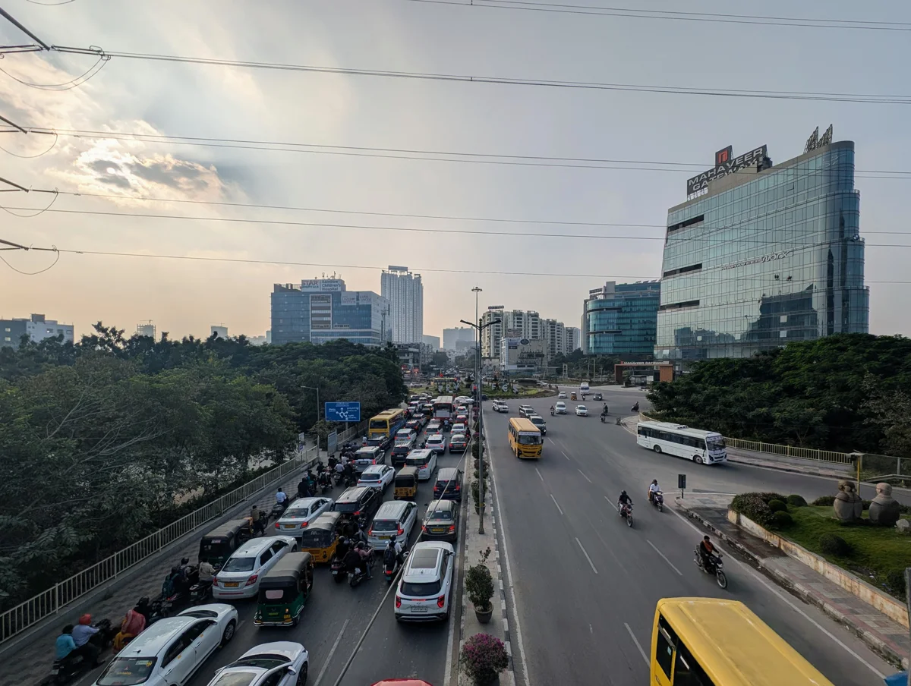
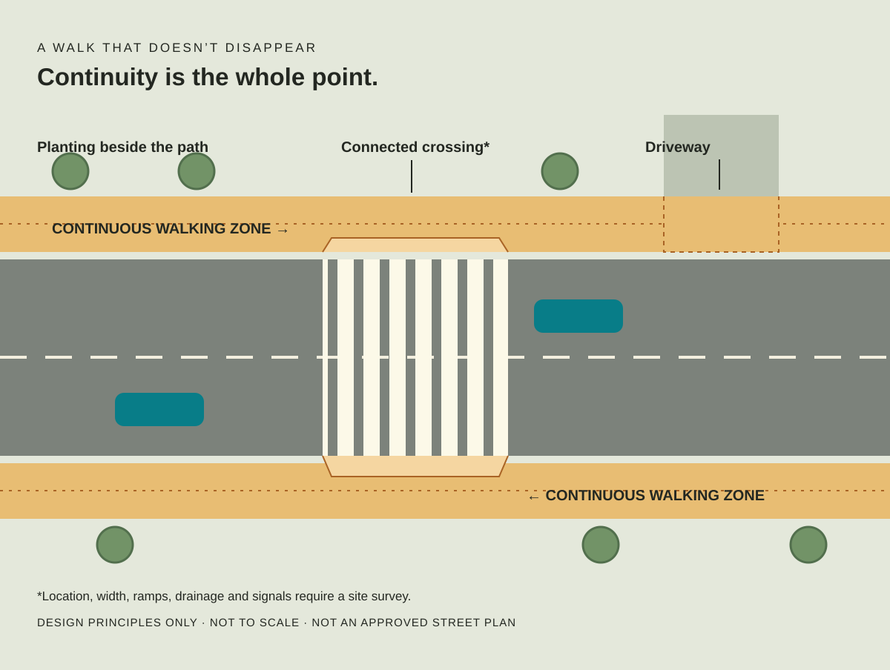

PICK A ROAD, GET THE RECEIPTS
The pavement is under questioning.
Choose a line on the map or a road in the list. We’ll show exactly what OpenStreetMap says, and what it doesn’t.
HYDERABAD · AN EXPERIMENT IN GETTING THERE ON FOOT
World-class offices.
Side-quest-class walks.
A map for the small indignities between your front door and a cup of chai.
Financial District · Nanakramguda · Kokapet
Let’s inspect the footpath ↓01 / THE REALITY CHECK
Tap a coloured road to inspect its tags.
Grey means unknown. It does not mean “fine”.
Background tiles are unavailable. The coloured local road geometry still works.
PICK A ROAD, GET THE RECEIPTS
Choose a line on the map or a road in the list. We’ll show exactly what OpenStreetMap says, and what it doesn’t.
02 / A MODEST, RADICAL IDEA
No flying taxis required.
Just a place for two feet. Or four wheels.


Carry the walking surface across driveways. No disappearing act every 30 metres.
Study desire lines, traffic and signals. Provide connected ramps and markings, not a leap of faith.
Shade and small planting pockets beside the clear walking zone. Furniture is not an obstacle course.
03 / YOUR FEET ARE THE SENSOR
Walked this stretch? Record what happened, exactly where, and when. A joke is a label. The observation is the evidence.
No account, upload or public submission. Download before closing or reloading. Notes are marked unreviewed and never change the map’s OSM evidence.
Record from a stationary, suitable place. Don’t enter traffic for a photo. Avoid faces, number plates and private details.
0 notes in this tab.
THE SMALL PRINT, IN NORMAL-SIZED PRINT
Roads and walking links come from OpenStreetMap, snapshot 9 September 2026. Tags may be stale. Snapshot time is not survey time. No claim about present safety, usable width or accessibility follows.
Only explicit sidewalk tags produce a sidewalk signal. Private compounds and motorways are separated. Crossing ways are included; standalone crossing nodes are not. This is not a complete pedestrian inventory.
A useful first audit covers both sides of one short stretch, with dates, endpoints and photos of every transition. Export field notes for review. Do not infer continuity from a single photograph.
Download the map snapshot · GeoJSON · © OpenStreetMap contributors · ODbL · How sidewalk tags work
The optional background map loads tiles from OpenStreetMap, which receives your IP address and tile requests. Field-note content stays in this tab. No analytics or location tracking.
{kind=link}